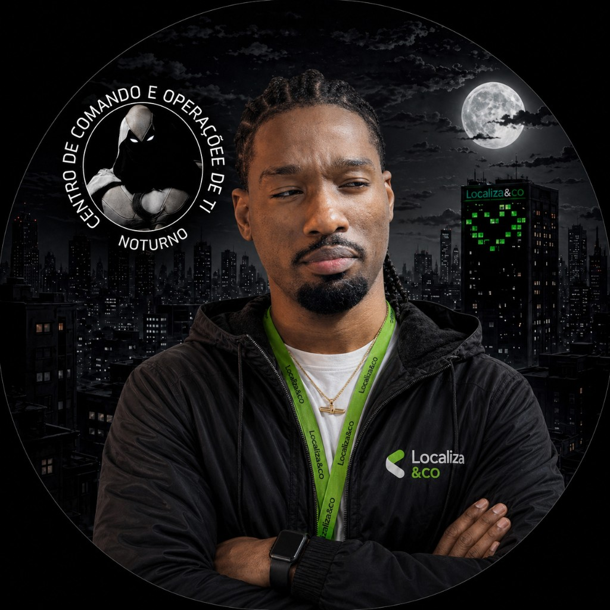

01
Application support
I support .NET and React applications in the Jornada do Carro alliance: I learn the flow, find the failure, and help the team that shipped the change get moving again.
IT Developer Operations · Localiza&Co
Software engineer. Full stack, application support, and automation.
I support .NET and React applications at Localiza&Co and run production deployments on Azure for every tribe in the Jornada do Carro alliance. I use Datadog to monitor those applications and investigate production incidents. I build full-stack software with Java, .NET, and React.

I work where the code a tribe delivers has to stay up in production.
I support .NET and React applications in the Jornada do Carro alliance: I learn the flow, find the failure, and help the team that shipped the change get moving again.
I release to Azure the changes from every tribe in the alliance. That means preparing the rollout, watching it land, and confirming the environment stayed healthy.
I use Datadog to monitor applications and investigate what happened in production: the symptom, the scope, and the path to the cause.
I study process automation and applied AI — agents, multi-agent systems, and MCP — to shorten the path from a request to a step someone can run.
Selected backend and team work. Java is the through-line.
01 · Backend challenge
REST backend for ingesting vehicle positions, registering and querying points of interest, and calculating how long a vehicle stays at each POI. Layered as Controller, Service, Repository, and Model, with unit tests for the ingestion service.
Technologies
02 · REST API
REST API for user registration, authentication, authorization, and profile management.
03 · Generation Brasil
Team delivery during the bootcamp, including ProjetoFitness, ProjetoDelivery, and ProjetoRH, with the related frontend repositories.
What I am going deeper on, alongside the day-to-day operation.
How an agent reads a context, calls the right tool, and returns a next step a person can actually run.
How specialized agents split a task and hand work to one another without losing the thread.
Model Context Protocol: a shared contract for how an agent reaches tools and data.
How instructions, examples, and constraints change the quality of a result.
Finding the repeated operational step and turning it into a flow.
What I use to build, support, and watch production.
Contact
Open to opportunities. The profile is visible to recruiters. Based in São Paulo, available hybrid, remote, or on-site.
WhatsApp · São Paulo, Brazil